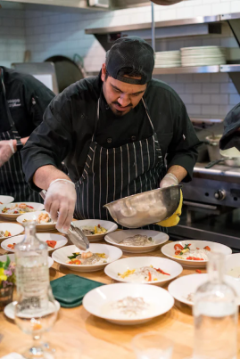

Sobre nosotros
Nuestro objetivo es llevar a diario a las casas de los los latinoamericanos repartidos en ael mundo todas las especialidades de la más auténtica cocina Italiana, aunando tradición, modernidad, servicio y proporcionando al consumidor una excelente experiencia culinaria.
La cocina italiana es sinónimo de sabor y tradición. Con sus pasta frescas, pizzas y risottos, la comida italiana te llevará a un viaje culinario inolvidable. En nuestra página, encontrarás recetas fáciles y auténticas que te permitirán disfrutar de la comida italiana en la comodidad de tu hogar. Desde la clásica carbonara hasta el sorprendente tiramisú, tenemos una receta perfecta para cada ocasión. ¡Prueba algo nuevo hoy y convierte tu cocina en un pequeño pedazo de Italia!
